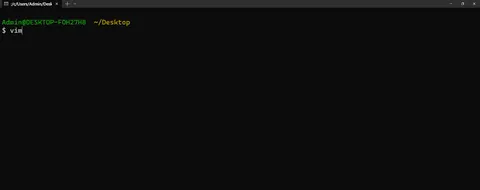
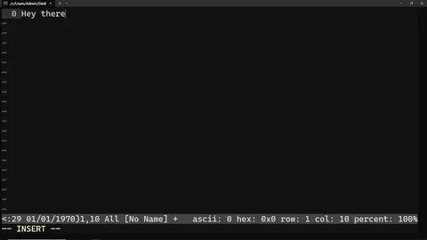
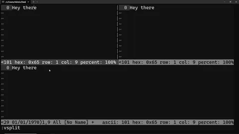
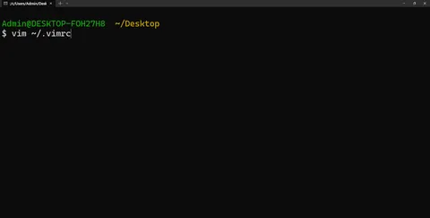
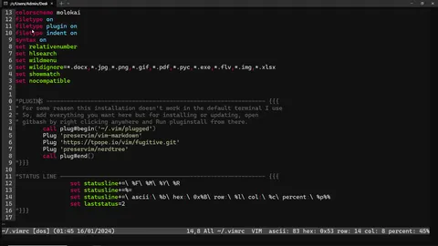

Learning how to use Vim
Look at the basics of what vim is all about and have this handy cheatsheet to get you started
By Sukalyan RoyPublished 7 min read

So i've dabbled in Linux for a little bit over the years, never really committing to it, but I've always been fascinated by the Command Line interface.
To use certain linux tools in windows I used the Git Bash installation of Git in my Desktop PC, which adds a lot of the core terminal features to any OS, which in my case is Windows 10. (Though I have used the same in Windows 7 before as well).
One of those tools is the one called Vim.

Vim, or Vi improved is the standard text editing solution for Linux terminal users, the Vim vs Emacs Debate aside. (Nano crying in the corner).

It has a very bare-bones interface for the untrained eyes, but with a closer look you can see the near infinite possibilities that the different commands, plugins and inbuilt features bring.
Now the picture above has some modifications from the default, which I will discuss later when talking about the .vimrc file, stay tuned.
There are many different features of Vim, but me being a basic user, do not know or use most of those. This post will deal with the basics and if demand is there for more, I will learn and talk about the different advanced features present in Vim.
Basics #
Let's deal with the basic controls first,
When you enter Vim, you see that welcome message and you are in what is called the Normal mode or the Command mode.
Here you can move around the text using the keys h,j,k,l.
k moves cursor up j moves it down. l moves it right and h moves it left.
A tip if you want to remember the key places, the j key in most keyboards has a little bit of material poking out, similarly with the f key. This can be used to find your way back in the key positions.
But if you want to edit the text, you have to enter Insert mode .
i to enter insert mode and esc to exit it.o puts you one line below the cursor and O puts above the cursor; and into Insert mode.
You could also press `I` to insert at the beginning of the line.
And a to insert (append) after the cursor,
A - insert (append) at the end of the line.
Type whatever you want in the insert mode then exit it.

There is also a way to use the Vim inbuilt command line. For that press esc ro return to the Command mode, then press : followed by the command.
For example, You could also make multiple windows in Vim by using the command :split to do a horizontal split or :vsplit to do a vertical split.

To move between windows, useCtrl w then normal movement commands like k, l,j, h etc to move.
And you can close the window by using :q. This works for any and all windows.
wfor saving changes andqfor quitting. combine these two as:wqto write and quit.q!is to quit without saving.
For a large text file, you would want some faster ways of navigating, for that you have the following:
Any number written before the a command repeats that command that number of times. For eg: 50k moves you up by 50 lines.
And also, gg takes you to the top of a file and G takes you to the bottom.
For quick deleting, dd deletes the entire line(when in command mode). D deletes everything in the line which is to the right of the cursor.
u to undo an action. Ctrl R is redo.
Now those are some basics that you'd need, and preferably you will remember these basic things.
Customization #
All installations have a file called .vimrc that deals with customization, let's open it.
You open a file with vim, using vim filename.

The vimrc is located at the home directory denoted by ~.
The following is my Vimrc, let's go through it line by line

The first few lines deal with the file naming, line numbering, colour theme and extension management.
The important ones are the syntax on and the set relativenumber to enable the syntax features of vim and the line numbers respectively.
Then there is the Plugin sections, here I have used the Vim Plug plugin manager to install plugins.
Once you add the needed lines in your vimrc, you need to run :PlugInstall and the rest will be handled by the plugin Manager.
Check the common ones out for yourself and install as needed.
The status Line part is something I had copied from a site i cannot remember, which adds the weird little things in the status bar, giving more information about vim and the files it has opened.
There is also the topic of Vimscript and programming, deciding which plugins to install and other advanced navigation features of vim that I myself haven't completed learned yet.
One popular alternative to vim is Neovim, which adds Language Server protocol support to vim for massively better language specific tools. It also uses the much more popular language Lua for scripting rather than the obscure Vimscript.
Since Vim for me has been a way to keep being connected to the terminal, I have not tried Neovim yet. But I'll surely try it out someday.
Cheatsheet #
For extended use, there are a few more things, for which i'm listing the short cheatsheet I made for just the basics. There are much more comprehensive cheatsheets out there, but which I believe can be overwhelming for most newbies.
You can use the following when you need it but i would recommend reading some more tutorials and examples out there and use them to make your own cheatsheet as you go on.
Another important resource is the vimtutor command on the terminal that launches an interactive tutorial to teach all the basics of Vim. Do check it out.
Here's my short cheatsheet:
-
kmoves cursor upjmoves it down.lmoves it right andhmoves it left. -
Any number written before the a command repeats that command that number of times. For eg:
50kmoves you up by 50 lines. -
ito enter insert mode andescto exit it.oputs you one line below the cursor andOputs above the cursor; and into Insert mode. -
To move between windows, use
Ctrl wthen normal movement commands likek, l,j, hetc to move. -
:ntakes you to next file in argument,:Ntakes to previous. For when you have several files in argument, try:bnwherenis the number of files you want to move forward. This loops back to the first one after passing over the last.:bpis to go to the previous one. -
wfor saving changes andqfor quitting. combine these two to write and quit.q!is to quit without saving. -
dddeletes the entire line(when in command mode).Ddeletes everything in the line which is to the right of the cursor. -
ggtakes you to the top of a file andGtakes you to the bottom. -
{and}are used to move up and down blocks of code. -
uto undo an action.Ctrl Ris redo. -
yto "yank" or copy something.yyto copy a whole line.pto paste below the cursor andPto paste above the cursor. -
Shift Venters visual mode where you can select and highlight blocks of text -
:"number"takes you to that line. -
wandbis used to move forward and backword one word at a time.WandBdoes the same but ignores punctuation(ie it skips to the next space).0takes you to the beginning of a line. -
t"character"takes you to the position just before the character andftakes you to the character itself. You can mix this with other commands. For eg:dt/deletes everything untill the next/occurence. -
%when used after a command applies that command to all the stuff in that block. For egB%takes you to the end of a parenthesis if used on a starting parenthesis. similarlyd%deletes everything in that parenthesis. -
Cis used to change a particular block of text. It deletes that block and puts you in insert mode. -
ris used to replace letters. You can use numbers to repeat it. -
*is used to toggle between the different instances of a word.;to go to the next instance. -
~swaps the cases of letters. -
.repeats the last command. For eg: if you usedddto delete a line, unless you use any other command inbetween, now you can delete a line using.any number of times you want. -
<and>used to indent a block of text left or right respectively. -
Macros: start recording your keystrokes with
q"macroname"and replay them using@macroname.
See you soon #
This was my first technical blog on Hashnode and I do plan on writing more based on the few sets of notes I've taken in the past regarding different topics.
Do tell me if there is anything you want me to delve deeper into and I will try my best to write about it.
Some more resources:
https://linuxhandbook.com/vim/
https://github.com/junegunn/vim-plug